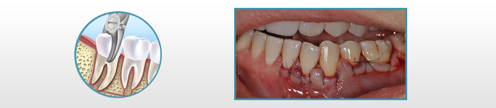

Your aftercare, in the clinic's own words
Genuine post-treatment guidance published by Adi's Dentalaya, organised so you can find the right list quickly. If anything worries you or doesn't match what you were told after your procedure, call the clinic — these pages are general guidance, and your dentist's instructions always come first.
Gum surgery post-operative
After gum surgery, the surgical site is protected with a special dressing. Follow your dentist's prescription strictly and keep the area undisturbed.
- Numbness lasts about 1.5–2 hours. Wait until the local anaesthesia wears off before eating — you could unintentionally hurt numb areas. Avoid biting your cheek or lip.
- A special dressing protects the site. It hardens shortly after placement and stays for 7–14 days. If it loosens or comes off, contact the dental office immediately.
- Good oral hygiene, gently. Be careful while brushing near the area. Do not disturb the site with your tongue or fingers, and do not pull your lip or cheek to peek at it — this alters healing.
- Use a cold pack for swelling. Wrap an ice pack in a soft towel or cotton cloth and hold it over the cheek for 5–10 minutes at a time.
- Sleep with your head elevated above the level of the heart to reduce post-surgical swelling. Follow the dentist's prescription strictly.
- Appliances on pause. If you wear a night guard, orthodontic retainer or similar, don't wear it until the dentist advises you to resume.
- A pinkish tinge in saliva is normal for about 24–48 hours. If bleeding is severe, contact the dental office immediately.
- Mild sensitivity to cold can appear after surgery; it reduces gradually as healing occurs.
- Soft-food diet. Chew mainly on the opposite side. Avoid very hot food (it increases bleeding tendency) and avoid drinking juice through a straw — the negative pressure encourages bleeding.
- No alcohol or cigarettes for 7–14 days — they prolong healing and can cause complications.
- Salt-water gargling: from 24 hours after surgery, gargle with salt in lukewarm water 4–6 times a day.
- Return visit: you will be recalled after 7–14 days for removal of the dressing and sutures.

Oral surgery with post-op care
Oral surgery covers extractions (both simple ones and time-consuming wisdom-tooth removal), gum surgeries, dental implants, and minor procedures such as frenectomies and pre-prosthetic surgery. The first few hours matter most — then the next two weeks.
The first 30 minutes
- Bite on gauze or cotton for 30 minutes. After the surgery/extraction is completed and sutures are placed, bite on the gauze piece or cotton roll placed on the wound.
- Don't disturb or spit vigorously. Saliva laced with blood should not be spat out forcefully — this delays the stoppage of bleeding.
- Remove it with clean hands. After 30 minutes, wash your hands and lift the cotton roll out physically; don't spit it out, which encourages bleeding.
- Cold treats are encouraged. Plain ice cream without nuts or hot sauce is suggested after surgery. Diabetic patients can have sugar-free ice cream or a cold juice — without a straw.
The days that follow
- Numbness for 1.5–2 hours: don't eat until the anaesthesia diminishes, and avoid cheek and lip biting.
- Gum-surgery dressing: if placed, it hardens and stays 7–14 days; contact the office if it loosens.
- Hygiene, gently: don't disturb the site with the tongue or fingers; don't pull the lip or cheek to look.
- Cold pack for mild swelling (5–10 minutes at a time), and sleep head-elevated above heart level.
- Suspend appliances such as night guards or retainers until advised to resume.
- Pink tinged saliva for 24–48 hours is expected; severe bleeding → contact the office immediately.
- Sensitivity to cold reduces as healing progresses.
- Soft food, opposite side chewing, nothing very hot, and no straws.
- No alcohol or cigarettes for 7–14 days; salt-water gargles 4–6 times daily after the first 24 hours; recalled at 7–14 days for dressing and suture removal.
- Temporary denture/flipper on an implant: don't remove it for 24 hours, as removal is associated with bleeding.
- Follow your prescription strictly.
Life with braces
Treatment succeeds when the patient and orthodontist work together. Protecting your appliances is the single biggest thing you control — damaged braces mean a longer treatment time.
Eating with braces
For the first day or so, stick to soft foods. Avoid tough meats, hard breads, rotis, parathas and raw vegetables.
- Crunchy foods: popcorn, chips, burgers, toasted bread, pizza, shawarma
- Sticky foods: dry fruits, chocolates, gum
- Hard foods: nuts, candy, hard sandwiches
- Raw vegetables & fruits: corn, carrots, cucumber, coconut, raw mango, guava, apples, sugarcane
- Non-veg: chicken/meat — only soft parts, in small pieces
Chewing on hard things (pens, pencils, fingernails, bottle caps) damages braces — and damaged braces make treatment take longer.
General soreness
Teeth may be tender to biting pressure for three to five days. If the tenderness is severe, take a mild analgesic such as Paracetamol or Nimesulide — as advised by your doctor. Lips, cheeks and tongue can feel irritated for one to two weeks as they toughen; dental wax placed on the braces lessens this.
Loosening of teeth
Expected throughout treatment — don't worry. Teeth must loosen first so they can move, and they become rigidly fixed again in their new, corrected positions.
Brushing
- Rinse your mouth thoroughly after every meal
- Brush twice daily — morning and night, just before bed
- Brush under, above, behind and around every tooth and every bracket
- After rinsing, check: if teeth and brackets are not clean and shining — brush again!
- Gargle using mouthwash as prescribed
Care of appliances
To successfully complete the treatment plan you must work together with your orthodontist. Damaged appliances lengthen treatment time.
Athletics & sports
Wear a protective mouth guard for contact sports. In case of any accident involving the face, check your mouth and the braces, and contact the clinic immediately.
Denture maintenance
- Remove the denture at night — your oral tissues need rest too.
- Keep it in water whenever it is out of the mouth.
- Clean it daily with a denture brush.
- Never brush the fitting (under) surface — clean it with fingers and a gush of water instead.
- Ulcers or pressure spots? Visit promptly; the denture may require adjustments.
Post root canal treatment (RCT)
Root canal treatment is usually comfortable — but the tooth needs protection while it settles, and the crown matters.
- Mild to moderate pain is expected for 2–3 days after treatment.
- Do not chew hard food on the treated tooth until you receive a crown on it.
- Temporary cement between appointments: avoid drinking water and chewing food for 45 minutes — the minimum time for the filling material to set hard.
- Take prescribed medication without fail.
- Contact the dentist immediately in case of severe pain in the tooth.